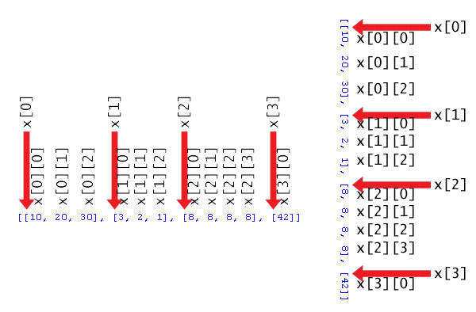
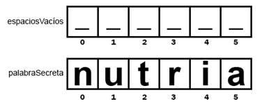
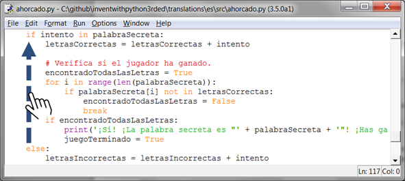

|
|
Capítulo 9 |
El Ahorcado |

Temas Tratados en este Capítulo:
· Cadenas multi-línea
· Métodos
· Listas
· Los métodos de lista append() y reverse()
· Los métodos de cadena lower(), upper(), split(), startswith(), y endswith()
· Los operadores in y not in
· Las funciones range() y list()
· Las sentencias del
· Los bucles for
· Las sentencias elif
El juego de este capítulo introduce muchos conceptos nuevos, pero no te preocupes. Experimentarás antes con estos conceptos de programación en el terminal interactivo. Aprenderás sobre los métodos, que son funciones vinculadas a valores. Aprenderás también acerca de un nuevo tipo de lazo de repetición llamado el bucle for y un nuevo tipo de dato llamado lista. Una vez entiendas estos conceptos, será mucho mas fácil programar El Ahorcado.
Código Fuente de El Ahorcado
El juego de este capítulo es un poco más largo que el de los juegos anteriores, pero una buena parte de este es arte ASCII para las figuras de el ahorcado. Introduce lo siguiente en el editor de archivos y guárdalo como ahorcado.py.
ahorcado.py
1. import random
2. IMÁGENES_AHORCADO = ['''
3.
4. +---+
5. | |
6. |
7. |
8. |
9. |
10. =========''', '''
11.
12. +---+
13. | |
14. O |
15. |
16. |
17. |
18. =========''', '''
19.
20. +---+
21. | |
22. O |
23. | |
24. |
25. |
26. =========''', '''
27.
28. +---+
29. | |
30. O |
31. /| |
32. |
33. |
34. =========''', '''
35.
36. +---+
37. | |
38. O |
39. /|\ |
40. |
41. |
42. =========''', '''
43.
44. +---+
45. | |
46. O |
47. /|\ |
48. / |
49. |
50. =========''', '''
51.
52. +---+
53. | |
54. O |
55. /|\ |
56. / \ |
57. |
58. =========''']
59. palabras = 'hormiga babuino tejon murcielago oso castor camello gato almeja cobra pantera coyote cuervo ciervo perro burro pato aguila huron zorro rana cabra ganso halcon leon lagarto llama topo mono alce raton mula salamandra nutria buho panda loro paloma piton conejo carnero rata cuervo rinoceronte salmon foca tiburon oveja mofeta perezoso serpiente araña cigüeña cisne tigre sapo trucha pavo tortuga comadreja ballena lobo wombat cebra'.split()
60.
61. def obtenerPalabraAlAzar(listaDePalabras):
62. # Esta función devuelve una cadena al azar de la lista de cadenas pasada como argumento.
63. índiceDePalabras = random.randint(0, len(listaDePalabras) - 1)
64. return listaDePalabras[índiceDePalabras]
65.
66. def mostrarTablero(IMÁGENES_AHORCADO, letrasIncorrectas, letrasCorrectas, palabraSecreta):
67. print(IMÁGENES_AHORCADO[len(letrasIncorrectas)])
68. print()
69.
70. print('Letras incorrectas:', end=' ')
71. for letra in letrasIncorrectas:
72. print(letra, end=' ')
73. print()
74.
75. espaciosVacíos = '_' * len(palabraSecreta)
76.
77. for i in range(len(palabraSecreta)): # completar los espacios vacíos con las letras adivinadas
78. if palabraSecreta[i] in letrasCorrectas:
79. espaciosVacíos = espaciosVacíos[:i] + palabraSecreta[i] + espaciosVacíos[i+1:]
80.
81. for letra in espaciosVacíos: # mostrar la palabra secreta con espacios entre cada letra
82. print(letra, end=' ')
83. print()
84.
85. def obtenerIntento(letrasProbadas):
86. # Devuelve la letra ingresada por el jugador. Verifica que el jugador ha ingresado sólo una letra, y no otra cosa.
87. while True:
88. print('Adivina una letra.')
89. intento = input()
90. intento = intento.lower()
91. if len(intento) != 1:
92. print('Por favor, introduce una letra.')
93. elif intento in letrasProbadas:
94. print('Ya has probado esa letra. Elige otra.')
95. elif intento not in 'abcdefghijklmnñopqrstuvwxyz':
96. print('Por favor ingresa una LETRA.')
97. else:
98. return intento
99.
100. def jugarDeNuevo():
101. # Esta función devuelve True si el jugador quiere volver a jugar, en caso contrario devuelve False.
102. print('¿Quieres jugar de nuevo? (sí o no)')
103. return input().lower().startswith('s')
104.
105.
106. print('A H O R C A D O')
107. letrasIncorrectas = ''
108. letrasCorrectas = ''
109. palabraSecreta = obtenerPalabraAlAzar(words)
110. juegoTerminado = False
111.
112. while True:
113. mostrarTablero(IMÁGENES_AHORCADO, letrasIncorrectas, letrasCorrectas, palabraSecreta)
114.
115. # Permite al jugador escribir una letra.
116. intento = obtenerIntento(letrasIncorrectas + letrasCorrectas)
117.
118. if intento in palabraSecreta:
119. letrasCorrectas = letrasCorrectas + intento
120.
121. # Verifica si el jugador ha ganado.
122. encontradoTodasLasLetras = True
123. for i in range(len(palabraSecreta)):
124. if palabraSecreta[i] not in letrasCorrectas:
125. encontradoTodasLasLetras = False
126. break
127. if encontradoTodasLasLetras:
128. print('¡Sí! ¡La palabra secreta es "' + palabraSecreta + '"! ¡Has ganado!')
129. juegoTerminado = True
130. else:
131. letrasIncorrectas = letrasIncorrectas + intento
132.
133. # Comprobar si el jugador ha agotado sus intentos y ha perdido.
134. if len(letrasIncorrectas) == len(IMÁGENES_AHORCADO) - 1:
135. mostrarTablero(IMÁGENES_AHORCADO, letrasIncorrectas, letrasCorrectas, palabraSecreta)
136. print('¡Te has quedado sin intentos!\nDespués de ' + str(len(letrasIncorrectas)) + ' intentos fallidos y ' + str(len(letrasCorrectas)) + ' aciertos, la palabra era "' + palabraSecreta + '"')
137. juegoTerminado = True
138.
139. # Preguntar al jugador si quiere volver a jugar (pero sólo si el juego ha terminado).
140. if juegoTerminado:
141. if jugarDeNuevo():
142. letrasIncorrectas = ''
143. letrasCorrectas = ''
144. juegoTerminado = False
145. palabraSecreta = obtenerPalabraAlAzar(palabras)
146. else:
147. break
Cómo Funciona el Código
1. import random
El programa El Ahorcado selecciona aleatoriamente una palabra secreta a partir de una lista secreta de palabras. El módulo random provee está habilidad, por lo que la línea 1 lo importa.
2. IMÁGENES_AHORCADO = ['''
3.
4. +---+
5. | |
6. |
7. |
8. |
9. |
10. =========''', '''
...el resto del código es demasiado largo para mostrarlo acá...
Esta nueva sentencia de asignación se extiende a lo largo de las líneas 2 a la 58 en el código fuente. Para ayudarte a entender los que este código significa, aprendamos acerca de cadenas multi-línea.
Cadenas Multi-Línea
Hasta ahora todas las cadenas han sido de una sola línea y tenían un carácter de comillas al principio y al final. Sin embargo, si utiliza comillas triples al comienzo y al final entonces la cadena puede ir a lo largo de varias líneas:
>>> burbuja = '''Querida Alicia,
Volveré a la casa de Carol al final del mes. Te veré luego.
Tu amigo,
Bob '''
>>> print(burbuja)
Querida Alicia,
Volveré a la casa de Carol al final del mes. Te veré luego.
Tu amigo,
Bob
Estas son cadenas multi-línea. En una cadena multi-línea, los caracteres de nueva línea son incluidos como parte de la cadena. No tienes que utilizar el caracter de escape \n, o las comillas de escape siempre que no utilices tres comillas juntas. Esto hace que el código sea fácil de leer para grandes cantidades de texto.
Variables Constantes
El nombre de variable IMÁGENES_AHORCADO está todo en mayúsculas. Esta es una convención en programación para variables constantes. Las constantes son variables que tienen por finalidad almacenar valores que nunca cambian desde la primera sentencia de asignación. Aunque puedes cambiar el valor de IMÁGENES_AHORCADO como con cualquier otra variable, un nombre con todas las mayúsculas te recuerda no hacerlo. Dado que la variable IMÁGENES_AHORCADO nunca necesita ser cambiada, es marcada como constante.
Como todas las convenciones, es tu decisión seguirla. Pero siguiendo esta convención le haces mas fácil a otras y otros programadores leer tu código. Sabrán que IMÁGENES_AHORCADO siempre tendrá el valor que se le asignó en la línea 2.
Listas
Un valor de lista puede contener otros valores dentro. Intenta introducir esto en el terminal interactivo:
>>> spam = ['Vida', 'El Universo', 'Todo', 42]
>>> spam
['Vida', 'El Universo', 'Todo', 42]
Este valor lista en spam contiene cuatro valores. Cuando escribes el valor lista en tu código, comienza con un [ corchete y termina con otro corchete. Esto es igual a las cadenas que terminan y empiezan con un caracter de comillas.
Se separan con comas los valores individuales dentro de una lista. Estos valores son llamados elementos o ítems.
Índices
Intenta introducir animales = ['águila', 'alce', 'antílope', 'albert'] en el terminal interactivo para alamcenar una lista en la variable animales. Los corchetes son usados también para acceder al elemento dentro de una lista. Intenta introducir animales[0], animales[1], animales[2], animales[3] en un terminal interactivo para ver qué devuelven:
>>> animales = ['águila', 'alce', 'antílope', 'albert']
>>> animals[0]
'águila'
>>> animals[1]
'alce'
>>> animals[2]
'antílope'
>>> animals[3] # ¡el autor de este libro!
'albert'
El número entre los corchetes es el índice. En Python, el índice del primer elemento en una lista es 0. El segundo elemento está en el índice 1, el tercer elemento está en el índice 2 y así. Debido a que los índices comienzan en 0 y no en 1, decimos que las listas de Python tiene índices de base cero.
Las listas son buenas para almacenar varios valores sin usar una variable para cada uno. En otro caso, el código se vería como esto:
>>> animales1 = 'águila'
>>> animales2 = 'alce'
>>> animales3 = 'antílope'
>>> animales4 = 'albert'
Este código podría ser difícil de manejar si tiene ciento o miles de cadenas. Pero una lista puede fácilmente contener cualquier número de valores. Utilizando corchetes, puedes tratar los elementos en la lista como cualquie rotro valor. Intenta introducir animales[0] + animales[2] en el intérprete interactivo:
>>> animales[0] + animales[2]
'águilaantílope'
La evaluación sería como esto:
animales[0] + animales[2]
▼
'águila' + animals[2]
▼
'águila' + 'antílope'
▼
'águilaantílope'
IndexError
Si intentas acceder a un índice que es demasiado grande, obtendrás un IndexError que colgará tu programa. Intenta introducir lo siguiente en el intérprete interactivo:
>>> animales = ['águila', 'alce', 'antílope', 'albert']
>>> animales[9999]
Traceback (most recent call last):
File "", line 1, in
animales[9999]
IndexError: list index out of range
Cambiando los Valores de los Elementos de una Lista con asignación por Índice
También puedes usar los corchetes para cambiar el valor de un elemento en una lista. Intenta introducir lo siguiente en el intérprete interactivo:
>>> animales = ['águila', 'alce', 'antílope', 'albert']
>>> animales[1] = 'ALCE'
>>> animales
['águila', 'ALCE', 'antílope', 'albert']
La nueva cadena 'ALCE' sobreescribe el segundo elemento en la lista animales. De manera que animales[1] devolverá el segundo elemento de la lista en las expresiones, pero también puedes usarlo en el lado izquierdo de una sentencia de asignación para asignar un valor como el segundo elemento de la lista.
Concatenación de Listas
Puedes unir listas en una sola lista con el operador +, del mismo modo como puedes unir cadenas. Unir listas con el operador + es una concatenación de listas. Intenta introducir lo siguiente en el intérprete interactivo:
>>> [1, 2, 3, 4] + ['manzanas', 'naranjas'] + ['Alicia', 'Beto']
[1, 2, 3, 4, 'manzanas', 'naranjas', 'Alicia', 'Beto']
['manzanas'] + ['naranjas'] se evaluará a ['manzanas', 'naranjas']. Pero ['manzanas'] + 'naranjas' resultará en un error. No puedes sumar una lista y una cadena en lugar de dos listas. Si quieres agregar valores que no son listas a una lista, usa el método append() (descripto más adelante).
El Operador in
El operador in te puede decir si un valor está en una lista o no. Las expresiones que usan el operador in devuelven un valor lógico: True si el valor está en la lista y False si no está. Intenta introducir lo siguiente en el intérprete interactivo:
>>> animales = ['águila', 'alce', 'antílope', 'albert']
>>> 'antílope' in animales
True
La expresión 'antílope' en animales devuelve True porque la cadena 'antílope' es uno de los valores en la lista animales. Estña localizado en el índice 2.
Pero si escribes la expresión 'atún' in animales, esto devolverá False porque la cadena 'atún' no existe en la lista.
>>> animales = ['águila', 'alce', 'antílope', 'albert']
>>> 'antílope' in animales
True
>>> 'atún' in animales
False
El operador in también funciona para las cadenas. Verifica si una cadena existe en otra. Intenta introducir lo siguiente en el intérprete interactivo:
>>> 'hola' in 'Alicia le dice hola a Beto.'
True
Eliminando Elementos de Listas con Sentencias del
Una sentencia del eliminará un elemento en un índice determinado de una lista. Intenta introducir lo siguiente en el intérprete interactivo:
>>> spam = [2, 4, 6, 8, 10]
>>> del spam[1]
>>> spam
[2, 6, 8, 10]
Nota que cuando eliminas un elemento en el índice 1, el elemento que estaba en el índice 2 ahora es el nuevo valor en el índice 1. El elemento que estaba en el índice 3 pasa a ser el nuevo valor en el índice 2. Todo lo que estaba por encima del elemento eliminado se mueve un índice hacia abajo.
Puedes escribir del spam[1] una y otra vez para seguir eliminando elementos de la lista:
>>> spam = [2, 4, 6, 8, 10]
>>> del spam[1]
>>> spam
[2, 6, 8, 10]
>>> del spam[1]
>>> spam
[2, 8, 10]
>>> del spam[1]
>>> spam
[2, 10]
La sentencia del es una sentencia, no una función ni un operador. No tiene paréntesis ni devuelve un valor.
Listas de Listas
Las listas pueden contener otros valores, incluyendo otras listas. Digamos que tienes una lista de comestibles, una lista de tareas domesticas, y una lista de tus pasteles favoritos. Puedes poner las tres listas en una sola lista. Intenta introducir lo siguiente en el intérprete interactivo:
>>> comestibles = ['huevos', 'leche', 'sopa', 'manzanas', 'pan']
>>> tareas = ['limpiar', 'cortar el césped', 'ir al supermercado']
>>> pastelesFavoritos = ['manzanas', 'zarzamora']
>>> listaDeListas = [comestibles, tareas, pastelesFavoritos]
>>> listaDeListas
[['huevos', 'leche', 'sopa', 'manzanas', 'pan'], ['limpiar', 'cortar el césped', 'ir al supermercado'], ['manzanas', 'zarzamora']]
Para obtener un elemento dentro de una lista de listas, usarías dos conjuntos de corchetes como este: listaDeListas[1][2] que devolvería la cadena 'ir al supermercado'.
Esto es porque listaDeListas[1][2] devuelve ['limpiar', 'cortar el césped', 'ir al supermercado'][2]. Lo que finalmente devuelve 'ir al supermercado':
listaDeListas[1][2]
▼
[['huevos', 'leche', 'sopa', 'manzanas', 'pan'], ['limpiar', 'cortar el césped', 'ir al supermercado'], ['manzanas', 'zarzamora']][1][2]
▼
['limpiar', 'cortar el césped', 'ir al supermercado'][2]
▼
'ir al supermercado'
La Figura 9-1 es otro ejemplo de una lista de listas, a lo largo de alguno de los índices que apuntan a los elementos. Las flechas apuntan a índices de las propias listas internas. La imagen está invertida lateralmente para facilitar su lectura.
Métodos
Los métodos son funciones adjuntas a un valor. Por ejemplo, todos los valores de cadena tienen el método lower(), el cuál devuelve una copia de la cadena en minúsculas. Lo puedes llamar como 'Hola.lower()', lo cual devuelve 'hola'. No puedes llamar a lower() por sí mismo y no puedes pasar un argumento a lower() (como en lower('Hola')). Debes añadir el método a una cadena especifica usando un punto. La siguiente sección describe en mayor profundidad los métodos de cadena.

Figura 9-1: Los índices de una Lista de listas.
Los métodos de cadena lower() y upper()
Intenta introducir '¡Hola mundo!'.lower() en el intérprete interactivo para ver un ejemplo de este método:
>>> '¡Hola mundo!'.lower()
'¡hola mundo!'
También hay un método upper() para cadenas, el cual devuelve una cadena con todos los caracteres en mayúsculas. Intenta introducir '¡Hola mundo!.upper() en el intérprete interactivo:
>>> '!Hola mundo!'.upper()
'!HOLA MUNDO!'
Ya que el método upper() devuelve una cadena, también puedes llamar un método en esa cadena también. Intenta introducir '¡Hola mundo!'.upper().lower() en el intérprete interactivo:
>>> '¡Hola mundo!'.upper().lower()
'¡hola mundo!'
'¡Hola mundo!'.upper() devuelve la cadena '¡HOAL MUNDO!', y entonces se llama el método lower() de esta cadena. Esto devuelve la cadena '¡hola mundo!', que es el valor final de la evaluación.
¡Hola mundo!'.upper().lower()
▼
'¡HOLA MUNDO!'.lower()
▼
'¡hola mundo!'
El orden es importante. '¡Hola mundo!'.lower().upper() no es lo mismo que '¡Hola mundo!'.upper().lower():
>>> '!Hola mundo!'.lower().upper()
'!HOLA MUNDO!'
Esta evaluación sería:
'¡Hola mundo!'.lower().upper()
▼
'¡hola mundo!'.upper()
▼
'!HOLA MUNDO!'
Si se almacena una cadena en una variable, puedes llamar un método de cadena en esa variable. Mira este ejemplo:
>>> spam = '¡Hola mundo!'
>>> spam.upper()
'!HOLA MUNDO!'
Esto no cambia el valor en spam. La variable spam seguirá conteniendo '¡Hola mundo!'.
Note que los tipos de dato integer y float no tienen ningún método.
Los métodos de lista reverse() y append()
El tipo de datos list también tiene métodos. El método reverse() invertirá el orden de los elementos en la lista. Intenta introducir spam = [1, 2, 3, 4, 5, 6, 'miau', 'guau'], y después spam.reverse() para invertir la lista. Entonces, introduce spam para ver los contenidos de la variable.
>>> spam = [1, 2, 3, 4, 5, 6, 'miau', 'guau']
>>> spam.reverse()
>>> spam
['guau', 'miau', 6, 5, 4, 3, 2, 1]
El método mas común de lista que usarás es append(). Este método añadirá el valor que pasas como argumento al final de la lista- Intenta introducir lo siguiente en el intérprete interactivo:
>>> eggs = []
>>> eggs.append('hovercraft')
>>> eggs
['hovercraft']
>>> eggs.append('eels')
>>> eggs
['hovercraft', 'eels']
>>> eggs.append(42)
>>> eggs
['hovercraft', 'eels', 42]
Estos métodos cambian las listas que los llaman. No devuelven una nueva lista. Decimos que esos métodos cambian la lista “en el sitio”.
El método de lista split()
La línea 59 es una larga línea de código, pero en realidad es solamente una simple sentencia de asignación. Esta línea utiliza el método split(), que es un método del tipo de dato cadena, al igual que los métodos lower() y upper().
59. palabras = 'hormiga babuino tejon murcielago oso castor camello gato almeja cobra pantera coyote cuervo ciervo perro burro pato aguila huron zorro rana cabra ganso halcon leon lagarto llama topo mono alce raton mula salamandra nutria buho panda loro paloma piton conejo carnero rata cuervo rinoceronte salmon foca tiburon oveja mofeta perezoso serpiente araña cigüeña cisne tigre sapo trucha pavo tortuga comadreja ballena lobo wombat cebra'.split()
Esta sentencia de asignación tiene solamente una larga cadena, llena de palabras separadas por espacios. Al final de la cadena hay una llamada al método split(). El método split() devuelve una lista en la que cada palabra en la cadena es un elemento aparte. La separación ocurre en cualquier lugar donde haya un espacio en la cadena.
Es fácil escribir código utilizando split(). Si lo hubieses creado desde el principio como lista, tendrías que haber escrito: ['hormiga', 'babuino', 'tejon',... y así, con comillas y comas para cada palabra.
Por ejemplo, intenta introducir lo siguiente en el intérprete interactivo:
>>> oracion = input()
Mi muy enérgica madre tan sólo nos sirvió nachos.
>>> oracion.split()
['Mi', 'muy', 'enérgica', 'madre', 'tan', 'sólo', 'nos', 'sirvió', 'nachos.']
El resultado es una lista de nueve cadenas, una cadena para una de las palabras de la cadena original, Los espacios no están incluidos en ningún elemento de la lista.
También puedes añadir tus propias palabras a la cadena en la línea 59, o eliminar cualquiera que no quieres que esté en el juego. Solamente asegurate que los espacios separan las palabras.
Cómo Funciona el Código
La línea 61 define la función obtenerPalabraAlAzar(). Se pasará una lista como argumento por su parámetro listaDePalabras. Esta función devolverá una palabra secreta de la lista en listaDePalabras.
61. def obtenerPalabraAlAzar(listaDePalabras):
62. # Esta función devuelve una cadena al azar de la lista de cadenas pasada como argumento.
63. índiceDePalabras = random.randint(0, len(listaDePalabras) - 1)
64. return listaDePalabras[índiceDePalabras]
La línea 63 almacena un índice aleatorio para esta lista en la variable índiceDePalabras. Lo haces llamando randint() con dos argumentos. El primer argumento es 0 (para el primer índice posible) y el segundo argumento es el valor que devuelve la expresión len(listaDePalabras) - 1 (para el último índice posible en una listaDePalabras).
Los índices de lista comienzan en 0 y no en 1. Si tienes una lista de tres elementos, el índice del primer elemento es 0, el índice del segundo elemento es 1, y el índice del tercer elemento es 2. La longitud de este lista es 3, pero el índice 3 estaría después del último índice. Esta es la razón por la que en la línea 63 se resta 1 de la longitud. El código en la línea 63 funcionará sin importar el tamaño de listaDePalabras. Ahora si quieres puedes añadir o quitar cadenas a listaDePalabras.
A la variable índiceDePalabras se asignará un índice al azar para la lista pasada como el parámetro listaDePalabras. La línea 64 devolverá el elemento en listaDePalabras almacenado en el índice entero índiceDePalabras.
Supongamos que ['manzana', 'naranja', 'uva'] se pasa como argumento a obtenerPalabraAlAzar() y que randint(0, 2) devuelve el número entero 2. Eso significaría que la línea 64 devolvería listaDePalabras[2] , y entonces se evaluaría para devolver 'uva'. Así es como obtenerPalabraAlAzar() devuelve una cadena aleatoria de la lista listaDePalabras.
Así, la entrada de obtenerPalabraAlAzar() es una lista de cadenas, y la salida que devuelve es una cadena seleccionada al azar de esa lista. Esto será útil en el juego del ahorcado para seleccionar una palabra secreta que adivine el jugador.
Mostrando el tablero al Jugador
A continuación, necesitas una función para imprimir el tablero del ahorcado en pantalla. También mostrará el número de letras que el jugador ha adivinado correctamente (e incorrectamente).
66. def mostrarTablero(IMÁGENES_AHORCADO, letrasIncorrectas, letrasCorrectas, palabraSecreta):
67. print(IMÁGENES_AHORCADO[len(letrasIncorrectas)])
68. print()
Este código define una nueva función llamada mostrarTablero(). Esta función tiene cuatro parámetros:
· IMÁGENES_AHORCADO - Una lista de cadenas múlti-línea que mostrarán el tablero como arte ASCII. (La variable global IMÁGENES_AHORCADO será pasada por este parámetro.)
· letrasIncorrectas - Una cadena de las letras que el jugador ha probado que no están en la palabra secreta.
· letrasCorrectas - Una cadena de las letras que el jugador ha probado que se encuentran en la palabra secreta.
· palabraSecreta - Una cadena de la palabra secreta que el jugador está tratando de adivinar.
La primera llamada a la función print() mostrará el tablero. IMÁGENES_AHORCADO será una lista de cadenas para cada tablero posible. IMÁGENES_AHORCADO[0] muestra una horca vacía, IMÁGENES_AHORCADO[1] muestra la cabeza (cuando el jugador falla una letra), IMÁGENES_AHORCADO[2] muestra una cabeza y el cuerpo (cuando el jugador falla dos letras), y así sucesivamente hasta IMÁGENES_AHORCADO[6] que muestra al ahorcado completo.
El número de letras en letrasIncorrectas reflejará cuantos intentos incorrectos ha hecho el jugador. Llama a len(letrasIncorrectas) para averiguar este número. Así que, si letrasIncorrectas es 'aetr' entonces len('aetr') devolverá 4. Imprimir IMÁGENES_AHORCADO[4] mostrará el tablero del ahorcado apropiado para 4 fallos. Esto es lo que devuelve IMÁGENES_AHORCADO[len(letrasIncorrectas)] en la línea 67.
70. print('Letras incorrectas:', end=' ')
71. for letra in letrasIncorrectas:
72. print(letra, end=' ')
73. print()
La línea 70 imprime la cadena 'Letras incorrectas:' con un carácter de espacio al final en lugar de un salto de línea. Recuerde que el argumento de palabra clave end=' ' utiliza sólo un signo = (como =), no dos (como ==).
La línea 71 es un nuevo tipo de bucle, llamado bucle for. Un bucle for a menudo utiliza la función range(). Ambos se explican en las dos secciones siguientes.
Las Funciones range() y list()
Cuando se llama con un argumento, range() devolverá un objeto range de números enteros desde 0 hasta (pero sin incluir) el argumento. Este objeto range se puede convertir al tipo de datos más común list con la función list(). Intenta introducir list(range(10)) en el intérprete interactivo:
>>> list(range(10))
[0, 1, 2, 3, 4, 5, 6, 7, 8, 9]
>>> list('Hola')
['H', 'o', 'l', 'a']
La función list() es similar a las funciones str() o int(). Toma el valor que se pasa y devuelve una lista. Es fácil generar enormes listas con la función range(). Prueba a introducir list(range(10000)) en el intérprete interactivo:
>>> list(range(10000))
[0, 1, 2, 3, 4, 5, 6, 7, 8, 9, 10, 11, 12, 13, 14, 15,...
...omitido por brevedad...
...9989, 9990, 9991, 9992, 9993, 9994, 9995, 9996, 9997, 9998, 9999]
La lista es tan grande, que ni siquiera cabrá completa en la pantalla. Pero puedes almacenar la lista en una variable:
>>> spam = list(range(10000))
Si pasa dos argumentos enteros a range(), el objeto range que devuelve va desde el primer argumento entero hasta (pero sin incluir) el segundo argumento entero. Intenta introducir list(range(10, 20)) en el intérprete interactivo:
>>> list(range(10, 20))
[10, 11, 12, 13, 14, 15, 16, 17, 18, 19]
La función range() se utiliza a menudo en los bucles for, que son muy parecidos a los bucles while que ya has visto.
Los bucles for
El bucle for es útil para recorrer una lista de valores. Esto es diferente al bucle while, los bucles while se repiten mientras una determinada condición es True. Una sentencia for comienza con la palabra clave for, seguida por un nuevo nombre de variable, seguido por la palabra clave in, seguido por un valor iterable, y terminando con dos puntos.
Un iterable es un valor de los tipos de datos list, range, o cadena. También hay otros tipos de datos que se consideran iterables que serán presentados más adelante.
Cada vez que la ejecución del programa se repite a través del bucle a la nueva variable en la sentencia for se le asigna el valor del siguiente elemento de la lista.
>>> for i in range(5):
... print('i se establece en ' + str(i))
...
i se establece en 0
i se establece en 1
i se establece en 2
i se establece en 3
i se establece en 4
El objeto range devuelto por range(5) es equivalente a la lista [0, 1, 2, 3, 4] en una instrucción for. La primera vez que la ejecución pasa por el código en el bloque for, se asigna 0 a la variable i. En la siguiente iteración, se asigna 1 a i, y así sucesivamente.
La sentencia for convierte automáticamente el objeto range devuelto por range() en una lista, así que no hay necesidad de hacer list(range(5)) en la sentencia for. Es suficiente con range(5).
Las listas y las cadenas son también tipos de datos iterables. Puedes usarlos en las sentencias for. Prueba a introducir lo siguiente en el intérprete interactivo:
>>> for cosa in ['gustan los gatos', 'gusta la pasta', 'gusta la programación', 'gusta el spam']:
... print('Realmente me ' + cosa)
...
Realmente me gustan los gatos
Realmente me gusta la pasta
Realmente me gusta la programación
Realmente me gusta el spam
>>> for i in 'Hola':
... print(i)
...
H
o
l
a
Un Bucle while equivalente a un Bucle for
El bucle for es similar al bucle while, pero sólo cuando necesitas iterar sobre los elementos de una lista, usar un bucle for es mucho menos código que escribir. Este es un bucle while que se comporta igual que el anterior bucle for mediante la adición de código extra:
>>> valorIterable = ['gustan los gatos', 'gusta la pasta', 'gusta la programación', 'gusta el spam']
>>> índice = 0
>>> While (índice < len(iterableVal)):
... cosa = iterableVal[índice]
... print('Realmente me ' + cosa)
... índice = índice + 1
...
Realmente me gustan los gatos
Realmente me gusta la pasta
Realmente me gusta la programación
Realmente me gusta el spam
Pero el uso de la sentencia for hace automáticamente el código adicional y facilita la programación ya que tienes menos que escribir.
El resto de la función mostrarTablero() muestra las letras incorrectas y crea la cadena de la palabra secreta con todas las letras aún no imaginado como espacios en blanco.
70. print('Letras incorrectas:', end=' ')
71. for letra in letrasIncorrectas:
72. print(letra, end=' ')
73. print()
El bucle en la línea 71 iterará sobre cada carácter de la cadena letrasIncorrectas e los imprimirá en pantalla. Recuerda que end=' ' reemplazará el carácter de salto de línea que se imprime después de la cadena con un único carácter de espacio.
Por ejemplo, si letrasIncorrectas era 'ajtw' este bucle for mostraría a j t w.
Cortes
El corte de lista crea un nuevo valor de lista con un subconjunto de elementos de otra lista. En el código, se especifican dos índices (al inicio y final) separados por dos puntos en los corchetes después de una lista. Por ejemplo, introduce lo siguiente en el intérprete interactivo:
>>> spam = ['manzanas', 'bananas', 'zanahorias', 'fechas']
>>> spam[1:3]
['bananas', 'zanahorias']
La expresión spam[1: 3] se evalúa a una lista con los elementos desde el índice 1 hasta (pero sin incluir) el índice 3 en spam.
Si se omite el primer índice, Python pensará automáticamente que deseas el índice 0 como primer índice:
>>> spam = ['manzanas', 'bananas', 'zanahorias', 'fechas']
>>> spam[:2]
['manzanas', 'bananas']
Si se omite el segundo índice, Python pensará automáticamente que deseas el resto de la lista:
>>> spam = ['manzanas', 'bananas', 'zanahorias', 'fechas']
>>> spam [2:]
['zanahorias', 'fechas']
Cortar es una forma sencilla de obtener un subconjunto de los elementos de una lista. Utiliza cortes con cadenas en la misma forma que los utilizas con listas. Cada caracter de la cadena es como un elemento de la lista. Prueba a introducir lo siguiente en el intérprete interactivo:
>>> miNombre = 'Zophie el Gato Gordo'
>>> miNombre[4:12]
'ie el Ga'
>>> miNombre[:10]
'Zophie el '
>>> miNombre[7:]
'el Gato Gordo'
La siguiente parte del código en el ahorcado utiliza cortes.
Mostrando la Palabra Secreta con espacios en blanco
Ahora quieres código que imprima la palabra secreta, pero con líneas en blanco para las letras que no se han adivinado. Puedes utilizar el caracter _ (llamado caracter de subrayado) para esto. En primer lugar, crea una cadena con nada más que un subrayado para cada letra de la palabra secreta. A continuación, reemplaza los espaciosVacíos para cada letra en letrasCorrectas.
Así que, si la palabra secreta era 'nutria' entonces la cadena en blanco sería '_____' (cinco caracteres _). Si letrasCorrectas era la cadena 'rt' tendrías que cambiar la cadena a '__tr__'. Es lo que hacen las líneas 75 a 79 del código.
75. espaciosVacíos = '_' * len(palabraSecreta)
La línea 75 crea la variable espaciosVacíos llena de subrayados _ mediante la replicación de cadenas. Recuerda que el operador * también se puede aplicar a una cadena y un entero, por lo que la expresión '_' * 5 devuelve '_____'. Esto nos asegurará que espaciosVacíos tenga tantos subrayados como letras haya en palabraSecreta.
77. for i in range(len(palabraSecreta)): # completar los espacios vacíos con las letras adivinadas
78. if palabraSecreta[i] in letrasCorrectas:
79. espaciosVacíos = espaciosVacíos[:i] + palabraSecreta[i] + espaciosVacíos[i+1:]
La línea 77 tiene un bucle for que pasa por cada letra de palabraSecreta y reemplaza el subrayado con la letra actual si existe en letrasCorrectas.
Por ejemplo, suponga que el valor de palabraSecreta es 'nutria' y el valor en letrasCorrectas es 'tr'. Querrías que la cadena '__tr__' sea mostrada al jugador. Vamos a averiguar cómo crear esta cadena.
La llamada a len(palabraSecreta) devolvería 5. La llamada a range(len(palabraSecreta)) se convierte en range(5), lo que hace que el bucle itere sobre 0, 1, 2, 3 y 4.
Debido a que el valor de i se enfrentará a cada valor en [0, 1, 2, 3, 4], el código en el bucle for es lo mismo que:
if palabraSecreta[0] in letrasCorrectas:
espaciosVacíos = espaciosVacíos[:0] + palabraSecreta[0] + espaciosVacíos[1:]
if palabraSecreta[1] in letrasCorrectas:
espaciosVacíos = espaciosVacíos[:1] + palabraSecreta[1] + espaciosVacíos[2:]
if palabraSecreta[2] in letrasCorrectas:
espaciosVacíos = espaciosVacíos[:2] + palabraSecreta[2] + espaciosVacíos[3:]
if palabraSecreta[3] in letrasCorrectas:
espaciosVacíos = espaciosVacíos[:3] + palabraSecreta[3] + espaciosVacíos[4:]
if palabraSecreta[4] in letrasCorrectas:
espaciosVacíos = espaciosVacíos[:4] + palabraSecreta[4] + espaciosVacíos[5:]
Si estás confundido respecto a cual es el valor de algo como palabraSecreta[0] o espaciosVacíos[3:], entonces mira la Figura 9-2. Muestra el valor de las variables palabraSecreta y espaciosVacíos, y el índice para cada letra en la cadena.

Figura 9-2: Los índices de las cadenas espaciosVacíos y palabraSecreta.
Si reemplazas las cortes de lista y los índices de lista con los valores que representan, el código del bucle sería algo como:
if 'n' in 'tr': # Falso
espaciosVacíos = '' + 'n' + '_____' # Esta línea se salta.
if 'u' in 'tr': # Falso
espaciosVacíos = '_' + 'u' + '____' # Esta línea se salta.
if 't' in 'tr': # Verdadero
espaciosVacíos = '__' + 't' + '___' # Esta línea se ejecuta.
if 'r' in 'tr': # Verdadero
espaciosVacíos = '__t' + 'r' + '__' # Esta línea se ejecuta.
if 'i' in 'tr': # Falso
espaciosVacíos = '__tr' + 'i' + '_' # Esta línea se salta.
if 'a' in 'tr': # Falso
espaciosVacíos = '__tr_' + 'a' + '' # Esta línea se salta.
# espaciosVacíos ahora tiene el valor '__tr__'
Los ejemplos de código anteriores todos hacen lo mismo cuando palabraSecreta es 'nutria' y letrasCorrectas es 'tr'. Las siguientes líneas de código imprimen el nuevo valor de los espaciosVacíos con espacios entre cada letra.
81. for letra in espaciosVacíos: # mostrar la palabra secreta con espacios entre cada letra
82. print(letra, end=' ')
83. print()
Obtener el intento del Jugador
La función obtenerIntento() será llamada para que el jugador pueda introducir una letra como intento. La función devuelve la letra que el jugador ha intentado como cadena. Además, obtenerIntento() se asegurará que el jugador escriba una letra válida antes de salir de la función.
85. def obtenerIntento(letrasProbadas):
86. # Devuelve la letra ingresada por el jugador. Verifica que el jugador ha ingresado sólo una letra, y no otra cosa.
Se pasa como argumento una cadena de las letras que el jugador ha intentado para el parámetro letrasProbadas. Entonces la función obtenerIntento() pide al jugador que adivine una sola letra. Esta letra será el valor que devolverá obtenerIntento().
87. while True:
88. print('Adivina una letra.')
89. intento = input()
90. intento = intento.lower()
El bucle while de la línea 87 se mantendrá pidiendo al jugador una letra hasta que introduzca texto que sea:
1. Una sola letra.
2. Una letra que no haya intentado previamente.
La condición para el bucle while es simplemente el valor booleano True. Eso significa que la única forma de salir de la ejecución de este bucle es mediante la ejecución de una sentencia break (que sale del bucle) o una sentencia return (que sale no sólo del bucle sino de toda la función).
El código dentro del bucle pide al jugador que introduzca una letra, que se almacena en la variable intento. Si el jugador introduce una letra mayúscula, se sobrescribe con una letra minúscula en la línea 90.
Sentencias elif ("Else If")
La siguiente parte del programa Ahorcado utiliza sentencias elif. Puedes pensar las sentencias elif “else if” como diciendo “Si esto es verdad, hacer esto. O bien, si esta próxima condición es verdadera, hacer aquello. O bien, si ninguno de ellos es verdadero, hacer esto último”.
Echa un vistazo al siguiente código:
if gatoNombre == 'Boladepelo':
print('Tu gato es peludo.')
elif gatoNombre == 'Manchas':
print('Tu gato está manchado.')
else:
print('Tu gato no es peludo ni manchado.')
Si la variable gatoNombre es igual a la cadena 'Boladepelo', entonces la condición de la sentencia if es verdadera y el bloque if le dice al usuario que su gato es peludo. Sin embargo, si esta condición es falsa, entonces Python intenta a continuación la condición de la sentencia elif (“else if”). Si gatoNombre es 'Manchas', entonces se imprime en la pantalla 'Tu gato está manchado'. Si ambos son falsos, el código le dice al usuario su gato no es peludo ni manchado.
Puedes tener tantas sentencias elif como quieras:
if gatoNombre == 'Boladepelo':
print('Tu gato es peludo.')
elif gatoNombre == 'Manchas':
print('Tu gato está manchado.')
elif gatoNombre == 'Gordito':
print('Tu gato es gordito.')
elif gatoNombre == 'Esponjoso':
print('Tu gato es esponjoso.')
else:
print('Tu gato no es peludo ni manchado ni gordito ni esponjoso.')
Cuando una de las condiciones elif es True, se ejecuta su código y después que es ejecutado salta a la primera línea después del bloque else. Así que uno y sólo uno de los bloques en las declaraciones if-elif-else se ejecutará. También puedes obviar el bloque else si no necesitas uno, y dejar tan sólo sentencias if-elif.
Cómo Comprobar que el Jugador Introdujo un Intento Válido
91. if len(intento) != 1:
92. print('Por favor, introduce una letra.')
93. elif intento in letrasProbadas:
94. print('Ya has probado esa letra. Elige otra.')
95. elif intento not in 'abcdefghijklmnñopqrstuvwxyz':
96. print('Por favor ingresa una LETRA.')
97. else:
98. return intento
La variable intento contiene la letra del intento del jugador. El programa necesita asegurarse que escribió un intento válido: una y sólo una letra minúscula. Si no lo hizo, la ejecución debe regresar al bucle y pedirle de nuevo una letra.
La condición de la línea 91 verifica si el intento no tiene longitud de un carácter. La condición de la línea 93 verifica si el intento ya existe en la variable letrasProbadas. La condición de la línea 95 comprueba si el intento no es una letra minúscula.
Si todas estas condiciones son falsas, entonces el bloque de la sentencia else se ejecuta y obtenerIntento() devuelve el valor del intento en la línea 98.
Recuerda, sólo se ejecutará uno de los bloques en las sentencias if-elif-else.
Pedir al jugador que Juegue Otra Vez
100. def jugarDeNuevo():
101. # Esta función devuelve True si el jugador quiere volver a jugar, en caso contrario devuelve False.
102. print('¿Quieres jugar de nuevo? (sí o no)')
103. return input().lower().startswith('s')
La función jugarDeNuevo() tiene sólo una llamada a la función print() y una sentencia return. La sentencia return tiene una expresión que parece complicada, pero se puede separar por partes. Aquí hay una revisión paso a paso de cómo Python evalúa esta expresión, si el usuario escribe SI.
input().lower().startswith('s')
▼
'SI'.lower().startswith('s')
▼
'si'.startswith('s')
▼
True
El objetivo de la función jugarDeNuevo() es dejar que el jugador escriba sí o no para indicar al programa si quiere jugar otra ronda de Ahorcado. El jugador debe ser capaz de escribir SI, si, S, o cualquier otra cosa que comienza con una “S” para decir “si”. Si el jugador escribe SI, entonces el valor que devuelve input() es la cadena 'SI'. Y 'SI'.lower() devuelve la versión en minúsculas de la cadena adjunta. Así que el valor que devuelve 'SI'.lower() es 'si'.
Pero ahí está la segunda llamada al método startswith('s'). Esta función devuelve True si la cadena asociada comienza con la cadena dada como parámetro entre paréntesis, y False si no lo hace. El valor que devuelve 'si'.startswith('s') es True.
¡Ahora has evaluado esta expresión! Lo que hace es permitir que el jugador escriba una respuesta, convierte la respuesta a minúsculas, comprueba si se empieza con la letra 's', a continuación, devuelve True si lo cumple y False si no.
En una nota aparte, también existe un método de cadena endswith(algunaCadena) que devolverá True si la cadena termina con la cadena en algunaCadena y False si no lo hace. endswith() es algo así como lo contrario de startswith().
Revisión de las Funciones del Ahorcado
¡Estas son todas las funciones que estamos creando para este juego! Vamos a repasarlas:
· obtenerPalabraAlAzar(listaDePalabras) tomará una lista de cadenas que se le pasan, y devuelve una cadena de ahí. Es como se elige una palabra para que el jugador adivine.
· mostrarTablero(IMÁGENES_AHORCADO, letrasIncorrectas, letrasCorrectas, palabraSecreta) mostrarán el estado actual del tablero, incluyendo cuanto ha adivinado el jugador de la palabra secreta hasta el momento, y las letras equivocadas que el jugador ha intentado. Esta función necesita que se le pasen cuatro parámetros para que funcione correctamente. IMÁGENES_AHORCADO es una lista de cadenas que contiene el arte ASCII para cada posible tablero del ahorcado. letrasCorrectas y letrasIncorrectas son cadenas formadas por las letras que el jugador ha intentado que están y no están en la palabra secreta, respectivamente. Y palabraSecreta es la palabra secreta que el jugador está tratando de adivinar. Esta función no tiene valor de retorno.
· obtenerIntento(letrasProbadas) toma una cadena con las letras que el jugador ya ha adivinado y se mantiene pidiendo al jugador por una letra que no está en letrasProbadas. Esta función devuelve la cadena de la letra valida que el jugador intentó.
· jugarDeNuevo() es una función que pregunta si el jugador quiere jugar otra ronda de Ahorcado. Esta función devuelve True si el jugador lo hace y False si el jugador no lo hace.
Después de las funciones está el código de la parte principal del programa en la línea 106. Todo lo anterior fueron solamente definiciones de función y una larga sentencia de asignación para IMÁGENES_AHORCADO.
Configuración de las Variables
106. print('A H O R C A D O')
107. letrasIncorrectas = ''
108. letrasCorrectas = ''
109. palabraSecreta = obtenerPalabraAlAzar(words)
110. juegoTerminado = False
La línea 106 es la primera llamada a print() que se ejecuta cuando inicia el juego. Muestra el título del juego. A continuación, se asignan cadenas en blanco para letrasIncorrectas y letrasCorrectas ya que el jugador no ha intentado aún ninguna letra falla o correcta.
La llamada a obtenerPalabraAlAzar(palabras) devolverá una palabra seleccionada al azar entre la lista de palabras.
La línea 110 establece juegoTerminado como False. El código establecerá juegoTerminado True cuando quiera indicar que el juego ha terminado y debería preguntar al jugador si quiere volver a jugar.
Mostrando el Tablero al Jugador
112. while True:
113. mostrarTablero(IMÁGENES_AHORCADO, letrasIncorrectas, letrasCorrectas, palabraSecreta)
La condición del bucle while siempre es True, lo que significa que se repetirá indefinidamente hasta que se encuentre una sentencia break. (Esto sucede más adelante en la línea 147.)
La línea 113 llama a la función mostrarTablero(), pasándole la lista de imágenes de arte ASCII del ahorcado y las tres variables creadas en las líneas 107, 108 y 109. En base al número de letras que el jugador ha intentado correctamente y ha fallado, esta función muestra el tablero del ahorcado adecuado al jugador.
Dejar que el Jugador Introduzca un Intento
115. # Permite al jugador escribir una letra.
116. intento = obtenerIntento(letrasIncorrectas + letrasCorrectas)
La función obtenerIntento() necesita todas las letras en letrasIncorrectas y letrasCorrectas combinadas, así que la línea 116 concatena las cadenas en estas variables y pasa el resultado como argumento. Este argumento es necesario para obtenerIntento() ya que la función tiene que comprobar si el jugador escribe una letra que ya ha adivinado.
Verificando si la Letra está en la Palabra Secreta
118. if intento in palabraSecreta:
119. letrasCorrectas = letrasCorrectas + intento
Si la cadena del intento existe en palabraSecreta, concatena entonces el intento el final de la cadena letrasCorrectas. Esta cadena será el nuevo valor de letrasCorrectas.
Verificando si el Jugador ha Ganado
121. # Verifica si el jugador ha ganado.
122. encontradoTodasLasLetras = True
123. for i in range(len(palabraSecreta)):
124. if palabraSecreta[i] not in letrasCorrectas:
125. encontradoTodasLasLetras = False
126. break
¿Cómo puede el programa de saber si el jugador ha adivinado todas las letras de la palabra secreta? Bueno, letrasCorrectas tiene cada letra que el jugador ha intentado correctamente y palabraSecreta es la propia palabra secreta. Pero uno no puede comprobar si letrasCorrectas == palabraSecreta ya que considera este caso: si palabraSecreta fue la cadena 'nutria' y letrasCorrectas es la cadena 'tiranu', entonces letrasCorrectas == palabraSecreta sería False aunque que el jugador ha adivinado todas las letras en la palabra secreta.
La única manera en la que puedes estar seguro que el jugador ganó es iterar sobre cada letra en palabraSecreta y ver si existe en letrasCorrectas. Si, y sólo si, existe cada letra de palabraSecreta en letrasCorrectas el jugador habrá ganado.
Si encuentras una letra en palabraSecreta que no existe en letrasCorrectas, sabes que el jugador no ha adivinado todas las letras. La nueva variable encontradoTodasLasLetras se establece en True en la línea 122 antes de que empiece el bucle. El bucle comienza asumiendo que se han encontrado todas las letras de la palabra secreta. Pero el código del bucle en la línea 125 va a cambiar encontradoTodasLasLetras a False la primera vez que encuentre una letra en palabraSecreta que no está en letrasCorrectas.
127. if encontradoTodasLasLetras:
128. print('¡Sí! ¡La palabra secreta es "' + palabraSecreta + '"! ¡Has ganado!')
129. juegoTerminado = True
Si se han encontrado todas las letras de la palabra secreta, se le dice al jugador que ha ganado y juegoTerminado se establece en True.
Cuando el Jugador Realiza un Intento Incorrecto
130. else:
131. letrasIncorrectas = letrasIncorrectas + intento
Este es el inicio del bloque else. Recuerda que el código de este bloque se ejecutará si la condición es False. ¿Pero cuál condición? Para averiguarlo, apunta el dedo al principio de la palabra clave else y muévelo hacia arriba, como en la Figura 9-3. Verás que la indentación de la palabra clave else es la mismo que la indentación de la palabra clave if en la línea 118.

Figura 9-3: La sentencia else coincide en la misma indentación que la sentencia if.
Así que si la condición en la línea 118 (intento in palabraSecreta) era False, entonces la ejecución se mueve a este bloque else.
Las letras que se han intentado erróneamente se concatenan a la cadena letrasIncorrectas en la línea 131. Esto es como lo que se hizo en la línea 119 para las letras que el jugador ha adivinado correctamente.
133. # Comprobar si el jugador ha agotado sus intentos y ha perdido.
134. if len(letrasIncorrectas) == len(IMÁGENES_AHORCADO) - 1:
135. mostrarTablero(IMÁGENES_AHORCADO, letrasIncorrectas, letrasCorrectas, palabraSecreta)
136. print('¡Te has quedado sin intentos!\nDespués de ' + str(len(letrasIncorrectas)) + ' intentos fallidos y ' + str(len(letrasCorrectas)) + ' aciertos, la palabra era "' + palabraSecreta + '"')
137. juegoTerminado = True
Cada vez que el jugador falla un intento, el código concatena la letra incorrecta con la cadena en letrasIncorrectas. Así, la longitud de letrasIncorrectas (o, en código, len(letrasIncorrectas)) es también el número de intentos equivocados.
La lista IMÁGENES_AHORCADO tiene 7 cadenas de arte ASCII. Así que cuando len(letrasIncorrectas) sea igual a 6, ya sabes que el jugador ha perdido porque se habrá terminado la imagen del ahorcado. Recuerda, IMÁGENES_AHORCADO[0] es el primer elemento de la lista, e IMÁGENES_AHORCADO[6] es la última.
Así que, cuando la longitud de la cadena letrasIncorrectas es igual a len(IMÁGENES_AHORCADO) - 1 (es decir, 6), el jugador se ha quedado sin intentos. La línea 136 imprime la palabra secreta y la línea 137 asigna True a la variable juegoTerminado.
139. # Preguntar al jugador si quiere volver a jugar (pero sólo si el juego ha terminado).
140. if juegoTerminado:
141. if jugarDeNuevo():
142. letrasIncorrectas = ''
143. letrasCorrectas = ''
144. juegoTerminado = False
145. palabraSecreta = obtenerPalabraAlAzar(palabras)
Si el jugador gana o pierde después de intentar una letra, el juego debe preguntar al jugador si quiere volver a jugar. La función jugarDeNuevo() se encarga de obtener un si o no del jugador, por lo que se llama en la línea 141.
Si el jugador quiere jugar otra vez, los valores de letrasIncorrectas y letrasCorrectas deben restablecerse a cadenas en blanco, juegoTerminado en False, y se almacena una nueva palabra secreta en palabraSecreta. De esta manera, cuando la ejecución vuelve al inicio del bucle while en la línea 112, el tablero volverá a un nuevo juego.
146. else:
147. break
Si el jugador no escribe algo que comienza con “s” cuando se le pregunta si quiere volver a jugar, entonces la condición en la línea 141 se evalúa a False y se ejecuta el bloque else. La sentencia break hace que la ejecución salte a la primera instrucción después del bucle. Pero debido a que no hay más instrucciones después del bucle, el programa termina.
Resumen
Este ha sido un capítulo largo, y hemos introducido varios conceptos nuevos. Pero Ahorcado ha sido nuestro juego más avanzado hasta el momento. A medida que los juegos se vuelven más y más complejos, va a ser una buena idea esbozar un diagrama de flujo en el papel sobre lo que sucede en tu programa.
Las listas son valores que pueden contener otros valores. Los métodos son funciones específicas a un tipo de datos. Las listas tienen los métodos append() y reverse(). Las cadenas tienen los métodos lower(), upper(), split(), startswith(), y endsWith(). Aprenderás sobre muchos más tipos de datos y métodos en lo que queda de este libro.
El bucle for es un bucle que itera sobre los elementos de una lista, a diferencia de un bucle while que itera mientras una condición es True. La declaración elif te permite añadir una cláusula "o de lo contrario, si" en el medio de tus sentencias if-else. La sentencia del puede eliminar variables o elementos dentro de las listas.